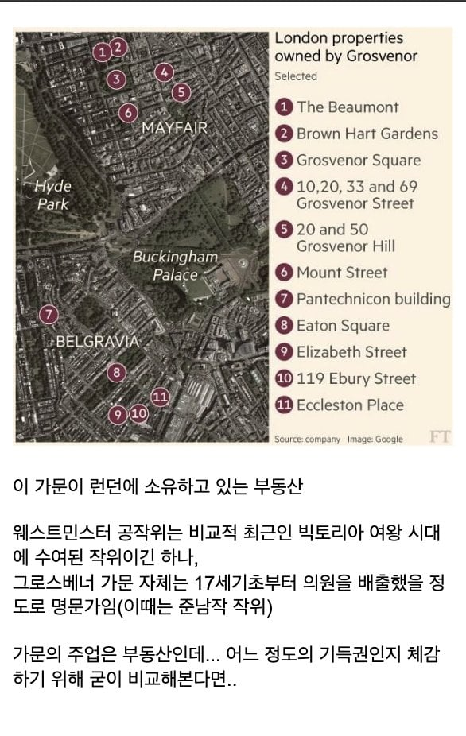
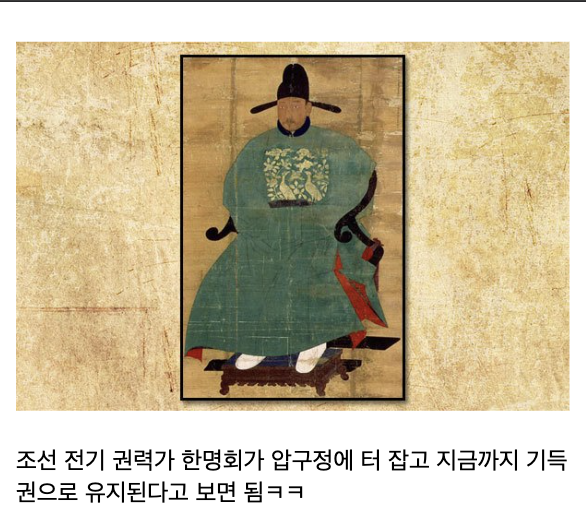

그래서 재벌 1위임????????
사실 사람들이 6.25 전쟁으로 한국의 부가 초기화 되었다고 믿는 경향이 있는데 이는 사실이 아니다. 전쟁 여파와 농지개혁으로 인해 전통적인 지주 계급 상당수가 몰락 한 것은 사실이지만, 지주 출신이 새로운 기업가 계급으로 전환하는 경우도 있었다. 대표적으로 삼성 이병철이나 LG 구인회 등이 그렇다. 토지는 잃었으나 일제강점기부터 부유했던 가문의 자본 교육 인적 네트워크를 기반으로 성장할 수 있었고, 기업가로 살아남는데 성공한 사례들은 대부분 전쟁 이전부터 가문이 가진 부의 기반을 농업에서 산업과 상업으로 전환하던 타이밍이 잘 맞아 떨어졌기 때문이다. 전쟁과 농지개혁은 기존 계급의 지배 방식을 크게 단절시켰으나, 지배층을 구성하는 사람과 가문까지 완전히 교체하지는 못했다.
전쟁해도 기득권 새끼들이 뒤져야하는데 전쟁 터지면 그새끼들 먼저 나라 떠서 똑같음
저걸 참고 사네 어휴 뼛속까지 농노들
섬나라라 본토가 대규모 전란에 휘말릴 일이 없었어서
다른나라처럼 사회가 리셋될 일이 없었음
그랬구나 안타깝
바로 죽창 찔러야지
기득권을 떠나서 부자감세 외치고 상속세를 왜 내냐고 따지는 븅냐링들 보면 이해가 안된다니까
가진놈이 없는놈 뺏어가는건 누워서 코딱지파기인데 반대는 불가능 하다는걸 모르나
지가 오늘도 3천원 내고 병원 진료 보고 1500원내고 버스 타고 출근하고 집 살땐 저금리 기금대출 받고
무료로 소방, 경찰, 상하수도 등등 각종 국가기반 설비 이용하는게 당연하다고 생각하는건지 ㅋㅋ
저 그로스베너 동네도 부촌임
저 짤에보면 ~ 스트릿 잇는데…? 저기나온게 어떤 빌딩 하나하나가아니라 그 길 위 모든 부동산 통째로 쟤네꺼다 이거 맞음?
베 헬라
S 묵음으로 그로브너라고 발음함. 이유는 몰루